Cabin · Lodge · Autumn Wall Art
Jordan Pond, Acadia National Park
Warm New England color and nostalgic park-poster style for cabins, living rooms, guest suites, and autumn travel walls.
Vintage-Inspired Destination Wall Art
A collection of retro travel poster wall art inspired by national parks, waterfalls, lakes, lighthouses, road trips, hometown memories, and meaningful destinations. Created by Dan Sproul as nostalgic mixed media artwork for homes, cabins, Airbnbs, offices, guest rooms, and travel walls.
Not Generic Posters
These vintage-inspired travel posters are designed for people who want more than a generic map or mass-produced souvenir. Each piece is built around the feeling of a place: a national park visit, a favorite lake, a family vacation, a local landmark, a road trip stop, or a destination that still feels personal years later.
The style is intentionally nostalgic: bold destination lettering, simplified landscape forms, warm color, graphic composition, and a poster-like presence that works well as framed wall art, canvas, metal, or acrylic.
National parks, waterfalls, lighthouses, lakes, road trips, cabins, towns, and memorable destinations.
Strong for birthdays, holidays, housewarmings, travel memories, and local-pride artwork.
Works in cabins, lake houses, Airbnbs, kids' rooms, offices, entries, guest rooms, and travel walls.
See the Posters in Rooms
These room examples show how retro destination posters can add color, personality, and a sense of travel without feeling childish or overly themed.
Warm New England color and nostalgic park-poster style for cabins, living rooms, guest suites, and autumn travel walls.

A bold Canadian Rockies poster for mountain homes, travel-inspired living rooms, rentals, and adventure-focused interiors.

A vertical lighthouse poster with Great Lakes character for entryways, stair landings, lake homes, and coastal-inspired rooms.

A classic waterfall destination poster for family travel memories, local pride, cabin walls, and Southern road trip artwork.
Poster Gallery
Browse current vintage-inspired travel poster prints for national parks, Ohio destinations, Great Lakes landmarks, waterfalls, lighthouses, mountain lakes, and road trip memories. More poster cards can be added as the collection grows.
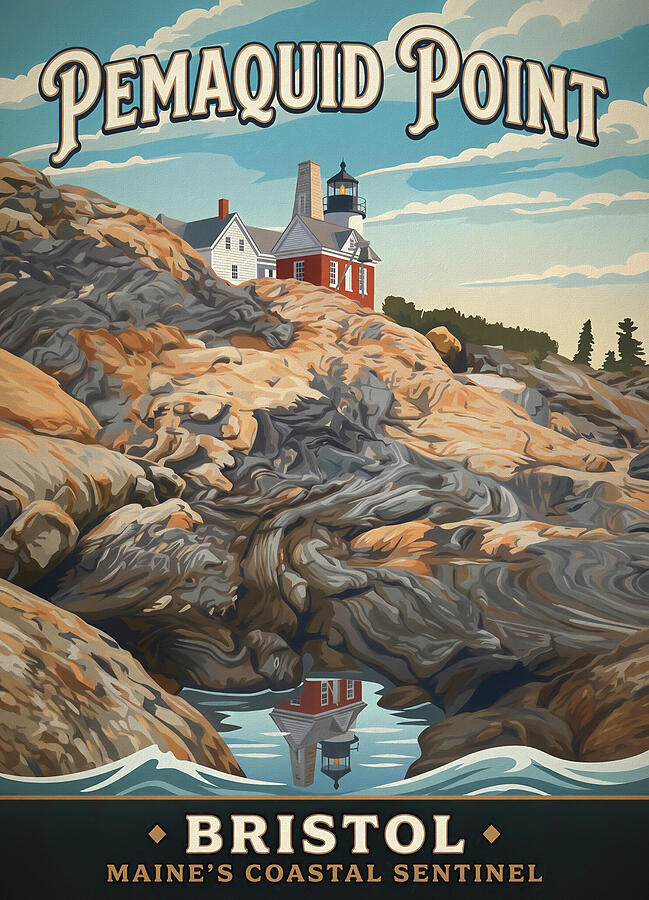
Maine’s rocky coast and lighthouse history reimagined as a vertical vintage travel poster for coastal homes, entries, and New England travel walls.
Shop This Poster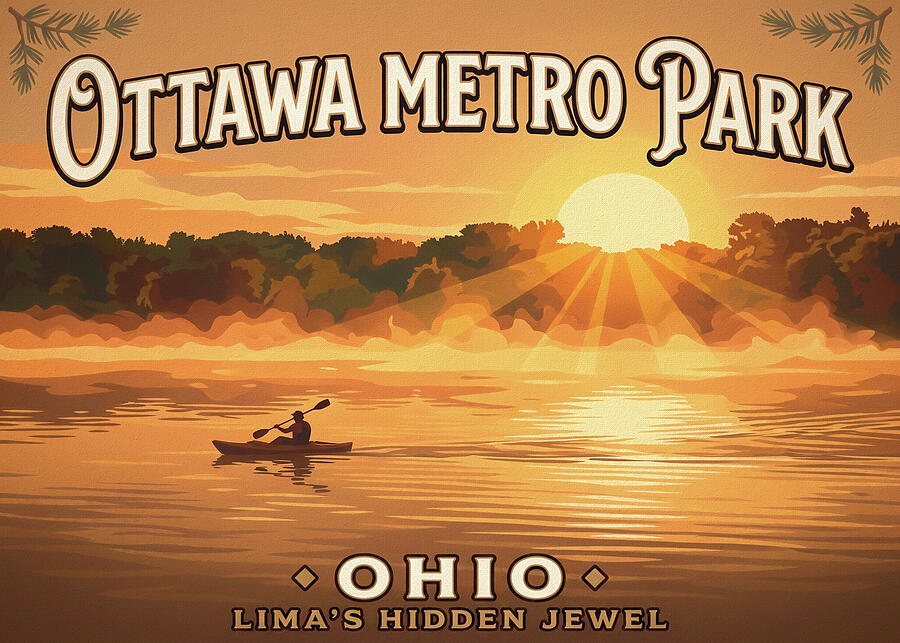
A Lima, Ohio local poster built around sunrise, water, and the quiet kayak scene that makes Ottawa Metro Park feel like a hidden Northwest Ohio destination.
Shop This Poster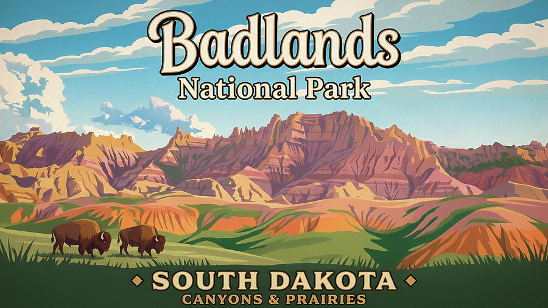
South Dakota badlands, prairie color, and bison turned into bold retro national park wall art for cabins, travel rooms, and western-inspired interiors.
Shop This Poster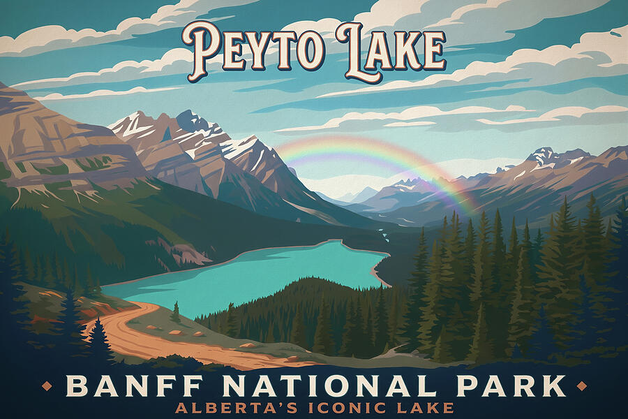
A turquoise lake, mountain valley, and rainbow atmosphere give this Banff travel poster a bright Canadian Rockies feeling for mountain homes and lodges.
Shop This Poster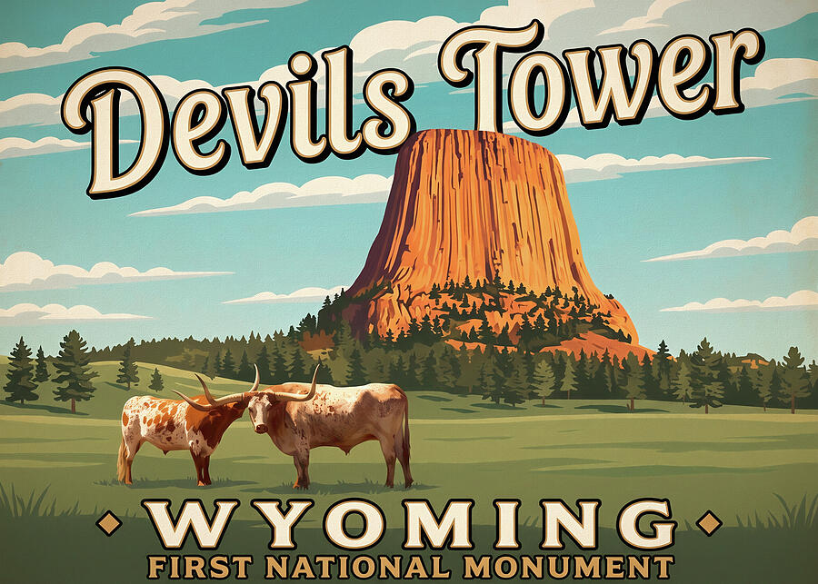
A western destination poster with Devils Tower, open prairie, and longhorn cattle for rustic rooms, travel walls, and national monument collectors.
Shop This Poster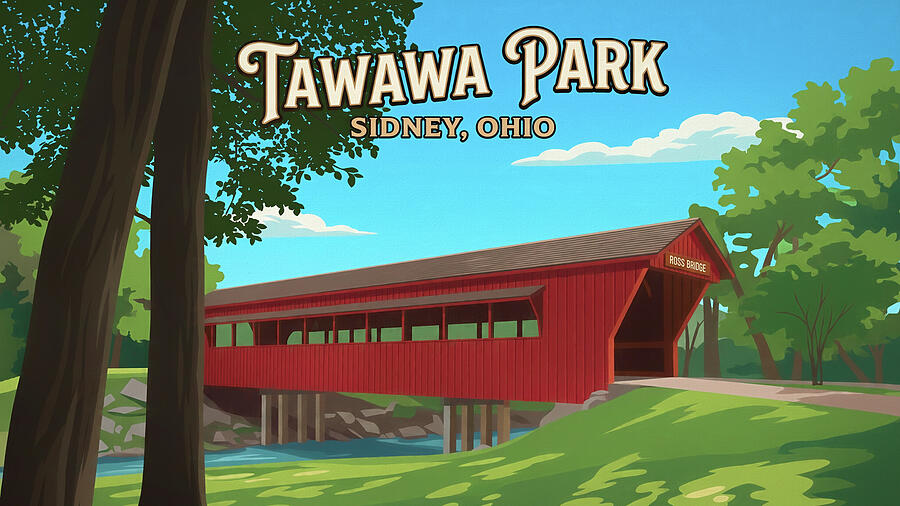
A bright Ohio covered bridge poster featuring Tawawa Park and Ross Bridge in Sidney, designed for local pride, hometown gifts, and Midwest wall art.
Shop This Poster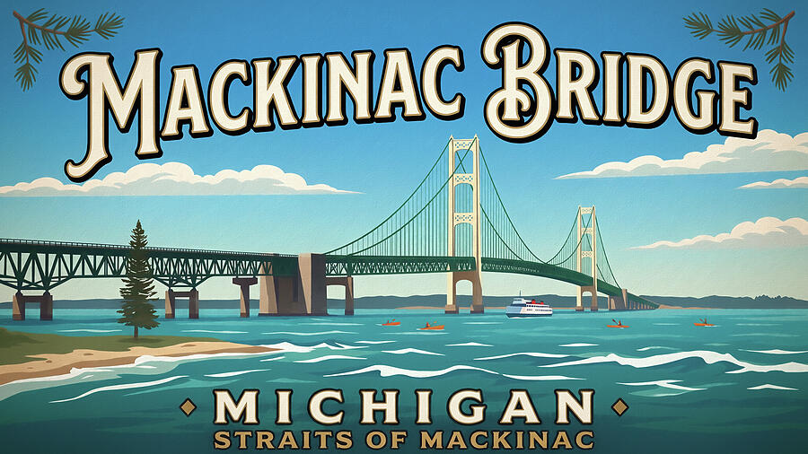
A clean Great Lakes travel poster with the Mackinac Bridge, blue water, and Straits of Mackinac character for lake houses and Michigan travel walls.
Shop This Poster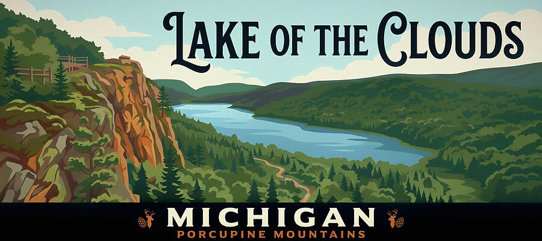
A panoramic Porcupine Mountains poster with Lake of the Clouds framed by cliffs and forest, ideal for cabins, offices, and Upper Peninsula memories.
Shop This Poster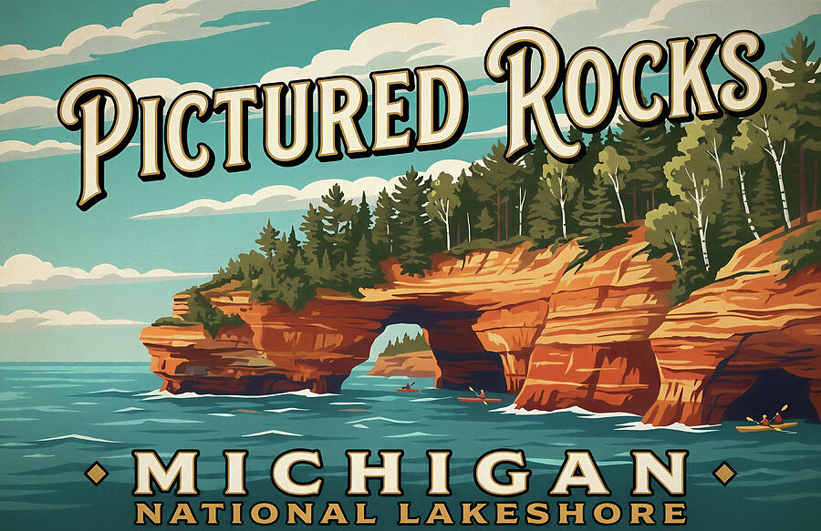
A colorful Michigan lakeshore poster with cliffs, kayaks, and Lake Superior water for coastal cabins, vacation rentals, and Great Lakes collectors.
Shop This Poster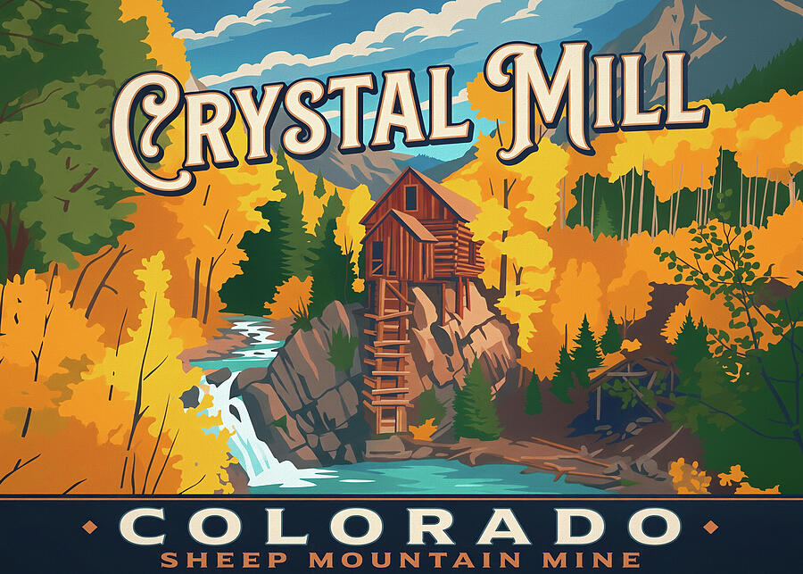
Autumn aspens, mountain scenery, and the historic Crystal Mill create a vintage Colorado poster for lodge rooms, cabins, and fall travel memories.
Shop This Poster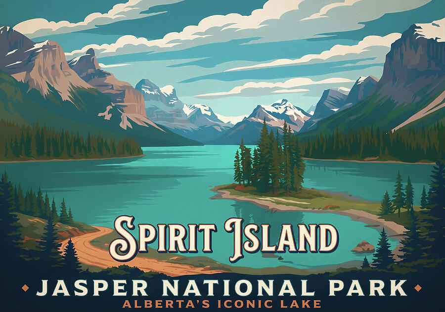
A classic Canadian Rockies lake scene with Spirit Island and mountain reflections, designed as nostalgic Jasper National Park travel wall art.
Shop This PosterIntroductory Custom Offer
Have a favorite park, town, lake, road trip stop, cabin area, honeymoon location, family vacation spot, local landmark, or meaningful destination? I can create a vintage-inspired travel poster for that place as a custom design project.
Where They Work
Related Artwork Directions
The travel poster collection connects naturally with Dan Sproul's mixed media, destination photography, and interior artwork resources.
Common Questions
No. These are modern vintage-inspired destination artworks created in a nostalgic travel-poster style. They are not original historical WPA posters.
Yes. Each linked poster page shows the current product options, which may include prints, framed prints, canvas, metal, acrylic, and more.
Yes. Simple custom destination poster designs are currently available for a $50 introductory design fee, with prints purchased separately after approval.
Parks, lakes, waterfalls, beaches, lighthouses, small towns, road trip stops, cabins, Airbnbs, family vacation places, and local landmarks are especially strong.
Send the destination, preferred wording, and a short note about why the place matters. I’ll let you know if it fits the vintage travel poster style.